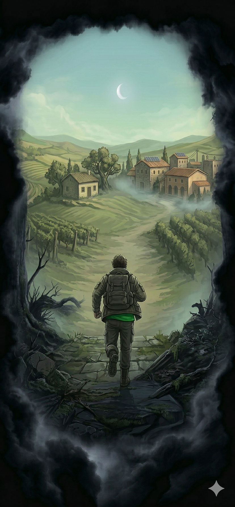

DOSYA / 01BAŞLANGIÇTA AÇIK
HAYATTA KALAN
Adam
Dayanıklı bir beden. Biraz daha fazla canla başlar.
PASİF YETENEK+10 başlangıç canı
Karanlıkta bir yol var.
Hangisi olduğunu sen seçeceksin.
Bir takvim dolusu bilinmezlik. Farklı karakterler, dallanan hikâyeler ve geri alamayacağın kararlar.
Şimdilik hazırlık aşamasında. İndirme bağlantıları yakında.
Sadece bir gün daha
yaşamak isteyen sen varsın.
Gözlerini bilmediğin bir yerde açarsın. Bir ormanda, terk edilmiş bir şehirde, çıkışı unutulmuş bir labirentte. Elinde birkaç eşya, önünde birbirinden şüpheli yollar.
İlerlemek tehlikeli. Beklemek de öyle. Bazen bir ses seni kurtarır; bazen peşine düşmen son kararın olur.

ALTI ATMOSFER. SAYISIZ OLASILIK.
Ağaçların arasında yalnız olduğunu sanma.
Boş sokaklar, kapalı kapılar, cevapsız sesler.
Pas ve sis arasında hâlâ çalışan bir şey var.
Geri döndüğünde aynı yeri bulabilecek misin?
Her yeşil, yaşam demek değil.
Bazı kapılar binlerce yıldır bir sebeple kapalı.
Dayanıklılık mı, sezgi mi, sessiz bir adım mı?
Karakterin sadece adın değil; oyun biçimin.
Dayanıklı bir beden. Biraz daha fazla canla başlar.
Adam ve Kadın başlangıçta açık. Sekiz karakter seviye ile, beş özel karakter ayrı satın almayla açılır. Satın alma zorunlu değil.
Takvimdeki yayımlanmış bir hikâyeye gir. Gün, tüm oyuncular için Türkiye saatiyle gece yarısında değişir.
Her adım enerji tüketir; tehlikeli kararlar canını azaltabilir. Can ve enerji veren eşyaları envanterden kullan.
Bir sonraki numaraya ulaşmak değil, doğru kaçış yolunu bulmak önemli. Yanlış yol seni çok daha erken sona götürebilir.
Oyun açıkken her 10 saniyede bir risk yükselir. Daha yüksek risk, daha fazla enerji maliyeti ve daha düşük başarı şansı demek. Kritik seviyede beklemek ölümle sonuçlanabilir.
Yeni bir sahneye geçmek riski genellikle azaltır; bazı sahneler tehlikeyi korur veya farklı miktarda düşürür. Envanter açıkken ve oyun arka plandayken süre durur.
Tehlike yaklaşıyor. Hareketsiz kalmak riski artırır.
Bu gösterge yalnızca kuralları anlatır; canlı oyun değildir.Can sıfırlanınca oyun biter. Bazı hikâye seçimleri, kalan canından bağımsız olarak ölümcül olabilir.
Enerji tükendiğinde deneme başına bir kez reklamla veya bir meşale hakkıyla devam edebilirsin. Meşale paketi 5 kullanım verir; hikâye ölümünü geri almaz.
Günlük bölümün ilk galibiyeti normalde 2, zor modda 3 XP verir. Her 10 XP bir seviye; yeni seviyeler yeni karakterler demek.
Takvimdeki atmosferler tarihe göre çeşitlenir. Bir gün ormanın içindeyken, başka bir gün bir piramidin kapısında bulursun kendini. Yayımlanan aynı tarihli hikâye değişmez; takvimi her açtığında yeniden çekilmez.
Yeni bir denemede seçeneklerin sırası ve görünür olan yollar değişebilir. Karakterin ve taşıdığın eşyalar da önüne çıkan seçenekleri etkiler. Yüzdeli şans atışlarında aynı cevabın aynı sonucu vermesi garanti değildir.
Seçimler birden fazla adımı atlayabilir, farklı bir dala açılabilir veya hikâyeyi bitirebilir. Seçenek numarası bir sonraki bölüm numarası değildir.
O günün yayımlanmış bölümüne Türkiye saatiyle 23:59:59'a kadar girersen erişimin korunur. Hiç girmediğin geçmiş günler kilitlenir; tamamladığın ödüllü reklamla açabilirsin. Reklamları Kaldır satın alımı yayımlanmış geçmiş günlere reklamsız erişim sağlar; gelecek günleri erkenden açmaz.
Evet. Şans atışlarına 15 yüzde puanı ceza, alınan hasara %60 artış ve adım başına 5 ek enerji maliyeti uygulanır. Karakter etkileri ve yuvarlama sonuçları değiştirebilir. Zor modu satın aldıktan sonra açıp kapatabilirsin; tercihin yeni oyun denemesinde uygulanır.
Bir tarihin yalnız ilk galibiyeti XP verir. Yeniden oynamak yeni yolları görmek için bir fırsattır; aynı günlük hikâyeden tekrar XP kazanılmaz.
Hayır. İki başlangıç karakteri ve seviyeyle açılan sekiz karakter bulunur. Beş özel karakter ayrı satın alımlardır. Kalıcı karakter haklarıyla beş kullanımlık tüketilebilir meşale paketi farklı ürünlerdir.
Mobil sürümler hazırlanıyor. Google Play ve App Store bağlantıları hazır olduğunda bu sayfaya eklenecek. Şu an mağaza kartları indirme başlatmaz.
Bir kararın ekranda görünmesinden
bir sonraki sahneye kadar.
React Native ve Expo ile geliştirilen ortak Android/iOS kod tabanı.
MOBİLTypeScript oyun mantığı, Zustand durum yönetimi ve cihazda yerel kayıt.
OYUN MANTIĞIÜretilen hikâyeler için şema ve rota kontrolleri.
HİKÂYE ÜRETİMİPrisma veri katmanı ve Docker yapılandırması bulunan sunucu kodu.
SUNUCURevenueCat satın alma entegrasyonu, Google AdMob ödüllü reklamları.
MOBİL SERVİSLERFikir de, kod da, bu dünyanın tasarımı da aynı imzayı taşıyor. Ben Brahim; Hayatta Kal’ın yaratıcısı ve geliştiricisiyim. Oyunun ilk fikrinden görsel üretimin yönetimine kadar bütün ana rollerini tek başıma üstleniyorum.
survive.support@gmail.comFikirden son satır koda kadar.
Oyunun fikri, dünyası ve yaratıcı yönü.
Oyun mekanikleri, mobil deneyim ve teknik geliştirme.
Karakterler, seçimler ve hayatta kalma kuralları.
Görsellerin hazırlatılması, seçimi ve uyarlanması.
Test, içerik akışı ve mağaza hazırlıkları.
Site tasarımı, geliştirme ve oyuncu iletişimi.
Hayatta Kal’a katkılarından dolayı: